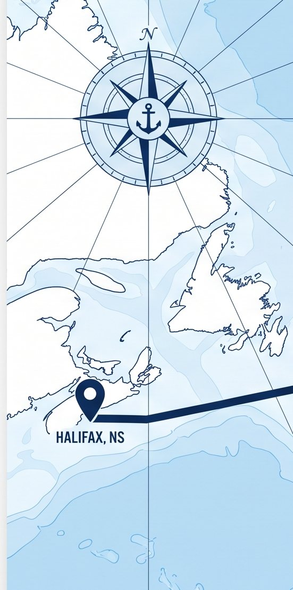

Cette page est en anglais
Nous n’avons pas encore traduit cette page. Les pages nécessaires à une réservation sont offertes en français dans le menu ci-dessus.

Where the numbers come from
Every figure quoted on this site is listed below with its source. If you are going to repeat something we said to a customer or a bank, check it here first.
Read this first. This is a demonstration site for a company that does not yet trade.
No affiliation. This site names real organisations, including PSA Halifax, the Port of Rotterdam, terminal operators and shipping lines, and Canadian and Dutch government bodies. They are named because the facts cited come from them. None of them endorses, sponsors or has any commercial relationship with this demonstration, and no partnership with any of them is claimed or implied.
The facts below about ports, distances, trade rules and export requirements are real and sourced. The company details are not: addresses, telephone numbers, the sailing schedule and the tracked shipments are all placeholder data built to show how the site would work. The section at the foot of this page says exactly which is which.
The route
- 3,854 nautical miles, Halifax to Rotterdam by sea
- Fluent Cargo route data
- About 11 days port to port
- Maersk CAE Eastbound schedule
The eleven-day figure is taken from a comparable commercial service: nine days Halifax to Bremerhaven, then two more to Rotterdam. A direct string would be quicker, and we will quote the actual carrier rotation rather than a general figure.
Port of Halifax
- Fairview Cove terminal: 70 acres, 2,297 ft of berth, 16.8 m minimum depth, four gantry cranes of which three are super post-panamax, 11,000 ft of on-dock double-stack rail
- Port of Halifax
- Closest North American port to Europe; rail transit of four to seven days to Chicago, Detroit and St Paul
- Port profile
- PSA International acquired the terminal in March 2022; new electric rail-mounted gantry cranes expected to remove up to 75% of port-generated truck traffic from city roads
- Port of Halifax and PSA Halifax
Port of Bremerhaven
- 5.21 million TEU handled in 2025; fourth largest container port in Europe. Bremen ports rose that year while Hamburg fell
- World Cargo News
- 4,930 m of continuous quay across 2,900 hectares, 14 deep-sea berths, 14.5 m depth
- bremenports
- North Sea Terminal Bremerhaven handles over three million TEU a year; MSC Gate also operates container facilities
- North Sea Terminal Bremerhaven
- Germany's leading vehicle export gateway, on the Weser estuary at the North Sea coast
- Port profile
- About nine days from Halifax, two days ahead of Rotterdam on the same rotation
- Maersk CAE Eastbound schedule
German customs
- Import VAT (Einfuhrumsatzsteuer) is collected at the border by Zoll at 19%, or 7% on reduced-rate goods, and is deductible as input tax on the return for the period in which it was paid
- Import VAT explained
- Declarations are filed electronically through ATLAS; an EORI number identifies the trader
- ATLAS import clearance
- Germany collects at the border and you reclaim, where the Netherlands allows deferment under Article 23. That difference is a cash-flow one, not a tariff one
- Grant Thornton Netherlands
Port of Rotterdam
- 14.2 million TEU in 2025, up 3.1%, and still Europe's largest container port
- World Ports Organization
- 12,500 hectares across 42 km, more than 100 deep-sea and feeder berths, over 30 deep-sea liner services, hinterland of roughly 500 million people
- Port of Rotterdam, facts and figures
CETA and rules of origin
- 98% of EU tariff lines duty free on entry into force, a further 1% phased out over seven years; industrial goods 99.4% (EU) and 99.6% (Canada) immediately
- Global Affairs Canada
- Non-originating material capped at 50% of value, 45% in certain sectors
- Protocol on rules of origin
- Origin declaration made on an invoice or other commercial document identifying the goods
- CBSA Memorandum D11-4-2
- Six-year record retention for Canadian exporters and importers, against three years in the agreement text
- Trade Commissioner Service
- Authoritative duty rates by tariff heading, which we check rather than publish
- EU Access2Markets
Canadian customs
- Under CARM, importers post their own Release Prior to Payment security; the required amount is recalculated each 20 October against the preceding twelve months
- Canada Border Services Agency
- Customs broker licence requires CAD $50,000 security under the Customs Brokers Licensing Regulations
- CBSA, licensed customs brokers
- A freight forwarding business needs a carrier code from CBSA; CIFFA membership requires at least CAD $250,000 per occurrence of liability and errors and omissions cover
- CIFFA
Dutch import VAT
- An Article 23 licence defers import VAT to the periodic VAT return, giving a nil net cash effect; a non-resident importer must appoint a fiscal representative, who is jointly liable
- Grant Thornton Netherlands
Exporting seafood to the EU
- The establishment must appear on the DG-SANTE approved list; shipments need a CFIA health certificate and a catch certificate from Fisheries and Oceans
- Canadian Food Inspection Agency
- Certificates are requested through TRACES NT; CFIA quotes three days to validate for live product
- CFIA, export certification to the EU
Trade and cargo figures
- Nova Scotia seafood exports around $827 million, fresh lobster $449 million; chemical wood pulp $219 million and paper products $229 million
- Nova Scotia export figures
- The EU is among Nova Scotia's three largest seafood markets
- CBC News
- US share of Canadian exports fell ten percentage points to 68% between May 2024 and May 2025
- Export Development Canada
- Non-US merchandise exports rose 24.8% month on month while US-bound exports fell 6.6%; aluminium exports rose 50.7% in a month to $1.2 billion, led by the Netherlands
- RSM, on Statistics Canada data
What on this site is not real
Being straight about this matters more than looking finished.
- The sailing schedule
- Generated. Vessel names illustrative.
- Tracked shipments
- Five invented consignments
- Addresses and phone numbers
- Placeholders
- Named people and customers
- None are real
- Photography
- Placeholder imagery, to be replaced
- Translations
- French and German written for this demonstration, not certified
We do not publish vessel IMO numbers, because inventing an entry in a register that genuinely exists would be worse than leaving the field out.